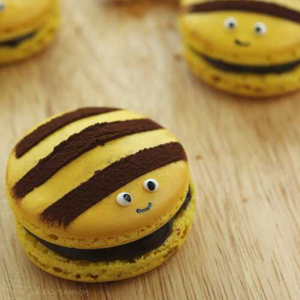
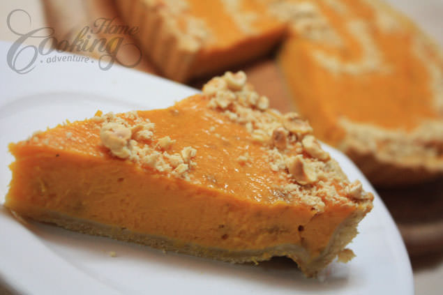
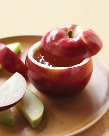
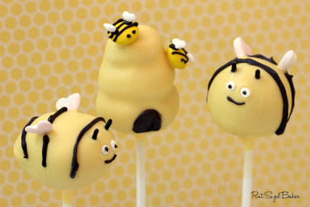

Link To Recipe
Photo





Many people may think these products are unrelated to bees. However, all of these recipes use at least 1 bee product to create the food.
Link To Recipe | Photo |
| Honey Truffles | |
| Honeybee Macaroons |  |
| Pumpkin Pie With Honey |  |
| Honey Covered Apples |  |
| Honeybee Cake Pops |  |